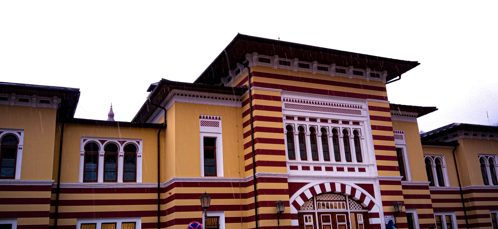

HODOČAŠĆE
About
I am one of hodočašće members and my name is Ibrahim Bećirović. I started this project of making a webiste on my own just from watching and following courses on Udemy. This site is now the second made site made from scratch representing the group hodočašće. That group is basically a group of 5 friends kind of different from others, having their own way of communication and understanding. Basically 5 friends with same things in common. I didn't use to like HTML at first but now when I got into it it's actually really cool and I love how it's all connected with other languages such as CSS or JS. My favorite part of it is CSS, also known as the designing language used to help HTML. Well myself I love working on design even if it's a powerpoint presentation. Other than that I like playing computer games with my friends or alone. My favorite game and the game I have spent the most hours on is Rocket League and I think it is going the be like that for a while, or even forever. I don't want this to be that long for you to stop reading so this is the end of my introduction.
How am I doing?
Lately been in many moods. Not having the best yet not the worst time. Half a month has passed since I'm working (practicing) as an imam in a village near mine named Vrpeć. Not a big village but yet full of people, kids, boys and girls. Some of them really nice, polite willing to share, help and give everything they have just to make you happy and enjoy your stay. But no one is the same, there are kids not taught well. It's not only the kids, the parents are responsible for not taking that much care of them. As much as I had a good time, I have seen a lot of bad things and habits people there have developed. In the beggining I was just having iftars at 3 same houses, basically had the time of my life. Really good food, good and polite welcoming people treating me like their child, accepting me as their child even tho I'm here just because of work. I'm told that I must leave a good trace behind myself, but people are leaving their trace to me, so I have someone to come to at my lowest, someone to rely on when I'm in danger or need place to say. We all know Allah is there always for us, that's right, Allah gave me this oppurtunity to enjoy my time on the right way. Those have been very nice two weeks. Now I kind of feel insecure, I'm going on more iftars where people don't give much attention, where are many people smoking and being loud. It's getting hard to focus and look for help in need. Yes, they all respect me as others but the feeling is not the same, now I am the one picking a date to get back to those 3 houses I was before to have iftars, just so I can chill a bit for some time, even if it's just one day. As everyone else I do have a love and a bit secret life. I'll tell you I had couple complications lately but I got it all to work out now. In short, I'm doing decent, going worse for now...
Written on 16th April 2022